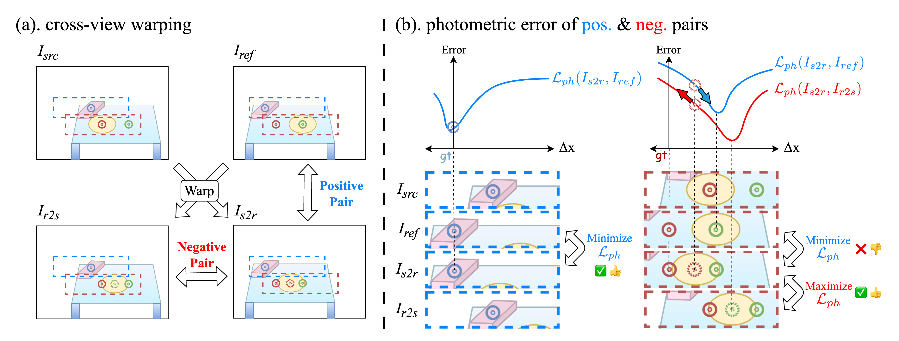
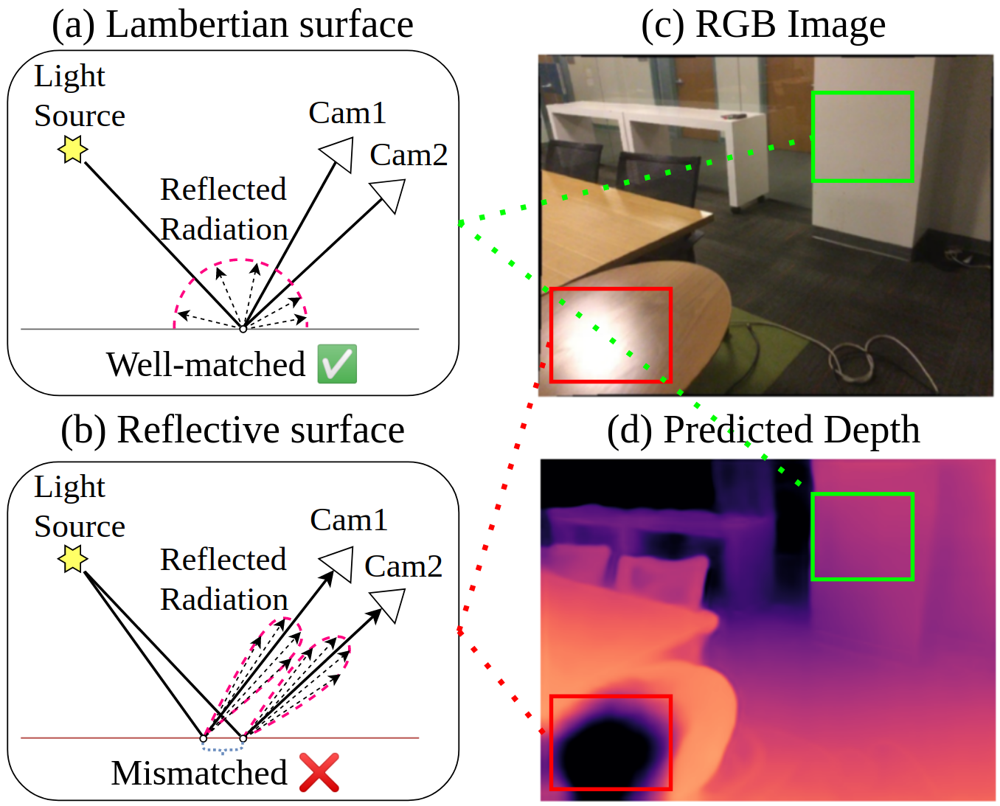
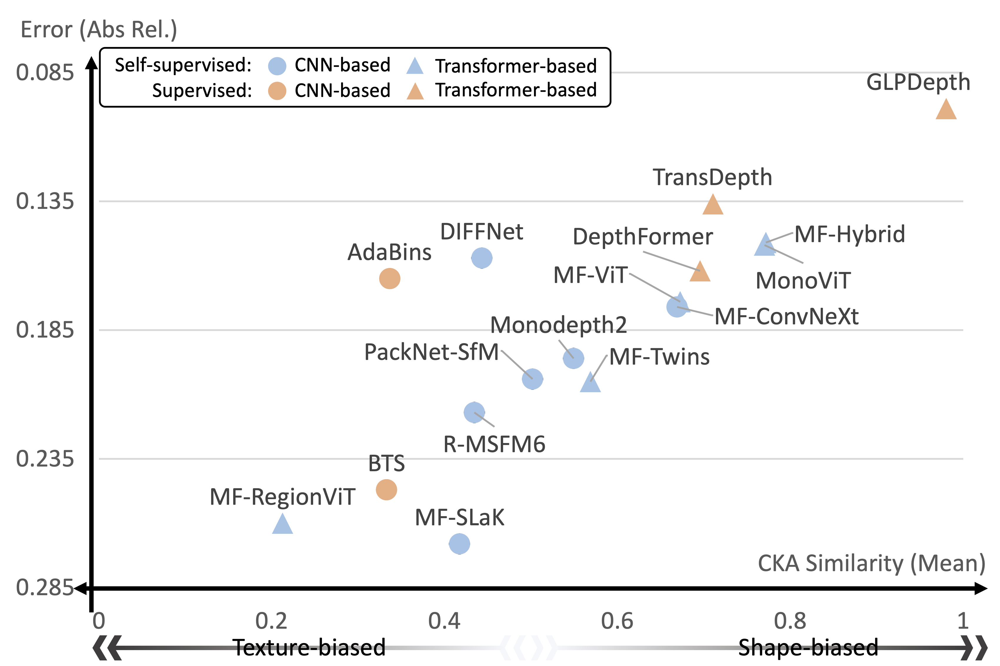

|
Kyumin Hwang
Hi, I'm Kyumin Hwang, a Ph.D. Student in the Department of Electrical Engineering and Computer Science at DGIST, South Korea. I am conducting my research under the supervision of Prof. Sunghoon Im at the DGIST Computer Vision Lab.
Previously, I earned the B.S. degree from the Department of Computer Science and Engineering, Kyungpook National University, in 2020, and the M.S. degree from the Department of Information and Communication Engineering, DGIST, in 2022.
My research interests include 3D computer vision, particularly multi-view stereo for 3D reconstruction, and deep learning with geometry for autonomous driving. Recently, I have also been focusing on 3D scene understanding, including occupancy prediction and rendering.
Email /
Google Scholar /
Github /
Curriculum Vitae
|
|
|
Selected Publications
* indicates equal contribution
† indicates corresponding author
|
|

|
Self-supervised Monocular Depth Estimation Robust to Reflective Surface Leveraged by Triplet Mining
Wonhyeok Choi*, Kyumin Hwang*, Wei Peng, Minwoo Choi, Sunghoon Im†
International Conference on Learning Representations (ICLR), 2025, Top Award in ICT Paper Contest
[Openreview][Paper]
We propose a reflective-aware triplet loss and multi-teacher knowledge distillation, improving depth accuracy on reflective surfaces.
|
|

|
Intrinsic Image Decomposition for Robust Self-supervised Monocular Depth Estimation on Reflective Surfaces
Wonhyeok Choi*, Kyumin Hwang*, Minwoo Choi, Kiljoon Han, Wonjoon Choi, Mingyu Shin, Sunghoon Im†
The Thirty-Ninth AAAI Conference on Artificial Intelligence (AAAI), 2025
[Paper]
We proposed a training strategy via intrinsic image decomposition to reduce errors on reflective surfaces and improve the depth prediction accuracy.
|
|

|
A Study on the Generality of Neural Network Structures for Monocular Depth Estimation
Jinwoo Bae, Kyumin Hwang, Sunghoon Im†
IEEE Transactions on Pattern Analysis and Machine Intelligence (T-PAMI, IF: 24.31), 2024
[Paper][Code]
We investigate the generalization performance of monocular depth estimation using various backbone networks, including CNN and Transformer models, by analyzing texture and shape biases through extensive experiments on both synthetic and real-world datasets.
|
|
|
Electronics and Telecommunications Research Institute (ETRI)
Research Intern
Topic: Object Detection
|
|
Honors and Awards
2024 Top Award, 16th ICT Paper Competition and Grand Exhibition / 제 16회 전자신문 ICT논문 공모대제전 최우수상
|
© Kyumin Hwang | Last updated: Feb 1, 2025
|